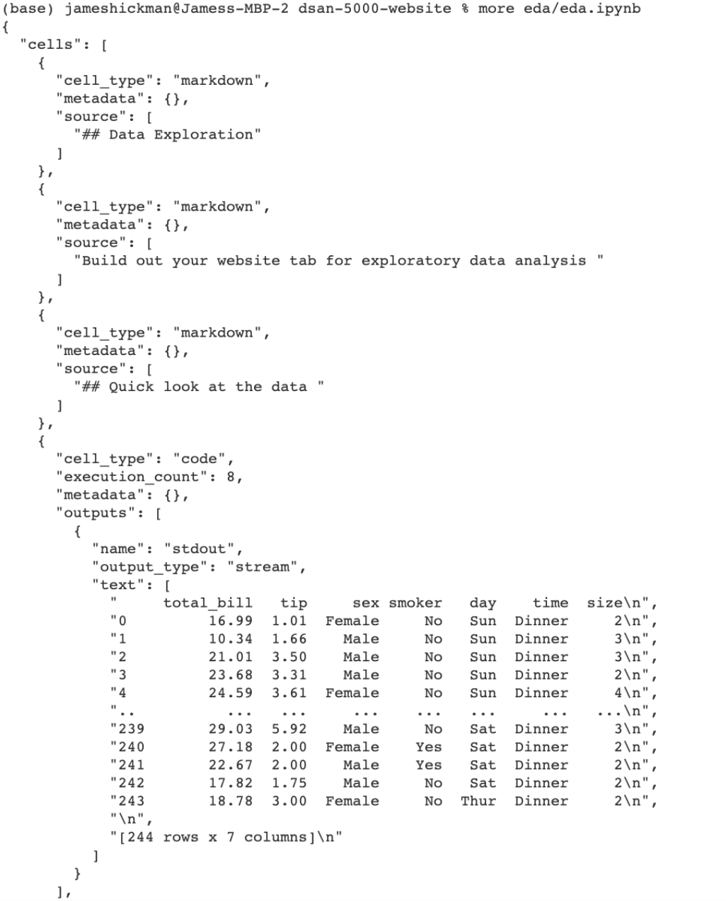
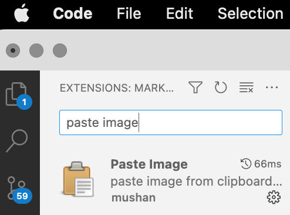

DSAN-5000: Introduction
See the following link for more information about the author: about me
This is a Quarto website.
To learn more about Quarto websites visit https://quarto.org/docs/websites.
I have changed my topic from “Financial Fraud” to the topic “Is Iphone still popular in the market?”
I will redo this introduction part later
Just ignore it for now please.
All my data are about Apple and Iphone.
1. Topics Introduction: Financial Fraud Detection
- summary: There are many type of financial fraud, credit card fraud, identity theft, account takeover, payment fraud, insurance fraud, money laudering, etc.
- Importance: The financial institution need to collect data, for example, transaction data, account history, customers’ data, etc, to analyze and predict the financial fraud to avoid the financial fraud in the future.
- Why the reader should continue: there are more and more new fraud methods came up, the past machine learning model might cannot apply to the new fraud methods.
- what work had done: The researchers had done many data collection, data preprocessing, and set up machine learning models to do the logistic regression, decision trees and random forest, etc. They also had done so many behavioral analysis to analyze transaction frequency, amount, time of day, etc.
- what are the “different points of views”/interpretations in the literature: There are many different points of views related to the financial fraud. From economic Perspective, they may analyze the costs of fraud prevention and the actual costs of fraud. From the data scientists’ perspective, they wish to focus more on using data-driving approaches to prevent fraud. There are also many other perspectives from different researchers.
- what exploring: In this area, we need to explore more about the relations between customers’ behavior and the fraud methods
- goals and hypothesis: clean the data I collect and find some factors that impact the financial fraud and make a fraud detetction model.
2. 10 questions to address
- How can we effectively collect and integrate diverse data sources, both internal and external (e.g., public records), to enhance fraud detection capabilities?
- What types of data sources are available for detecting financial fraud?
- Which machine learning algorithms and techniques are best suited for financial fraud detection?
- How can you fine-tune these models for optimal performance?
- What techniques can be applied to handle imbalanced datasets?
- What is the cost of implementing a fraud detection system, and how does it compare to the potential financial losses from fraud?
- How can you provide explanations for why a particular transaction or activity was flagged as potentially fraudulent?
- How could we get rid of some information we do not need for financial fraud when we clean the dataset?
- How could we evaluate our model in the end?
- What are the key features or variables that can be used to detect fraudulent activities?
3. Realated Articles
Predicting fraudulentfinancial statements using fraud detection models1
Abstract
- The key purpose of the research is to provide scientific data on the association between fraud causes and false financial statements. The paper gave further insight into the applicability of Altman’s z-score and Dechow f-score to the exposure of false financial statements by Jordanian industrial owners. The duration of research included the years from 2015 to 2019. The Dependent variable in the analysis was the false financial statement, while the separate fraud factors were financial security, external strain, financial priorities and the essence of the business. The analysis of the research takes a methodological model utilizing a multiple regression procedure to evaluate the theories of the study. The final findings of the analysis presented conclusive proof that Jordanian manufacturing firms were engaged in the conduct of false financial statements; while some of the triangle fraud variables were identified without any correlation with fraudulent financial reports; other factors were found to be strongly associated with fraud. As regards the accuracy of the fraud models, the findings of the analysis confirmed the validity and specificity of all the fraud detection models adopted in the study.
A Powerful Predicting Model for Financial Statement Fraud Based on Optimized XGBoost Ensemble Learning Technique2
Abstract
- This study aims to develop a better Financial Statement Fraud (FSF) detection model by utilizing data from publicly available financial statements of firms in the MENA region. We develop an FSF model using a powerful ensemble technique, the XGBoost (eXtreme Gradient Boosting) algorithm, that helps to identify fraud in a set of sample companies drawn from the Middle East and North Africa (MENA) region. The issue of class imbalance in the dataset is addressed by applying the Synthetic Minority Oversampling Technique (SMOTE) algorithm. We use different Machine Learning techniques in Python to predict FSF, and our empirical findings show that the XGBoost algorithm outperformed the other algorithms in this study, namely, Logistic Regression (LR), Decision Tree (DT), Support Vector Machine (SVM), AdaBoost, and Random Forest (RF). We then optimize the XGBoost algorithm to obtain the best result, with a final accuracy of 96.05% in the detection of FSF.
HIGHLY RECOMMENDED
- It is
highly recommendedthat you build your website using.ipynbfiles and NOT.qmdfiles - Functionally the two formats are basically identical, i.e. they are just
Markdown+Code - However there is
ONE MAJOR DIFFERENCE, i.e..ipynbstores the code outputs in the meta-data of the file- This means you
ONLY HAVE TO RUN THE CODE ONCEwith.ipynb .qmdwill run the code every time you build the website, which can be very slow- There are
cachingoptions for.qmd, however, they are “messier” that just using.ipynb
- There are
- Note:
.qmdis fine if there is no code, in which case it is basically just aMarkdownfile
- This means you
- Converting between the two
- You can switch between the two formats using
quarto convert clustering.qmdthis will output a.ipynbversion calledclustering.ipynbquarto convert eda.ipynbthis will output a.qmdversion callededa.qmd
- YOU CAN RUN
R CODEIN VSC WITH.ipynb, see the following link - It is possible, but
NOT RECOMMENDED, to mix Python and R code in the same file
IMPORTANT ASIDE
- A
.ipynbfile is simply aJSONfile with a specialized structural format - You can see this by running
more eda/eda.ipynbfrom the command line - Which will output the following;

TIP FOR MAC USERS
command+control+shift+4is very useful on a mac.- It takes a screenshot and saves it to the clip-board
- The following VSC extension allows you to paste images from the clip-board with
alt+command+v.
 tabis your best friend when using the command line, since it doesauto-completionopen ./path_to_filewill open any file or directory from the command line
Footnotes
Saleh, Mousa Mohammad Abdullah, et al. “PREDICTING FRAUDULENT FINANCIAL STATEMENTS USING FRAUD DETECTION MODELS.” Academy of Strategic Management Journal, vol. 20, 2021, pp. 1–17.↩︎
Ali, Amal Al, et al. “A Powerful Predicting Model for Financial Statement Fraud Based on Optimized XGBoost Ensemble Learning Technique.” Applied Sciences, vol. 13, no. 4, 2023, p. 2272–, https://doi.org/10.3390/app13042272.↩︎